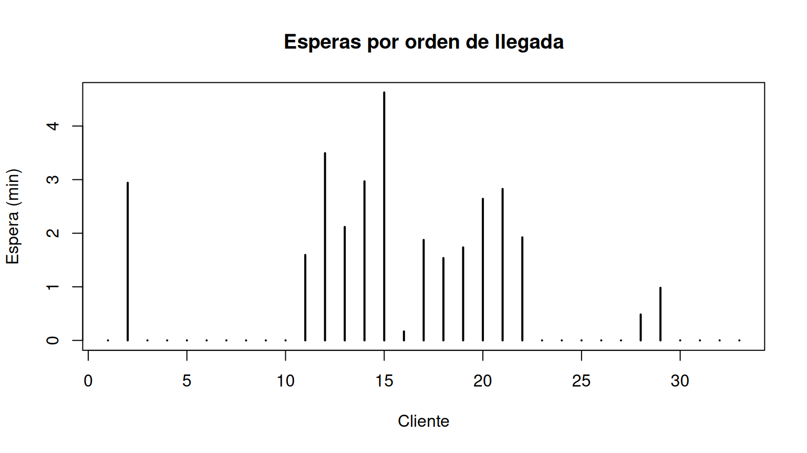
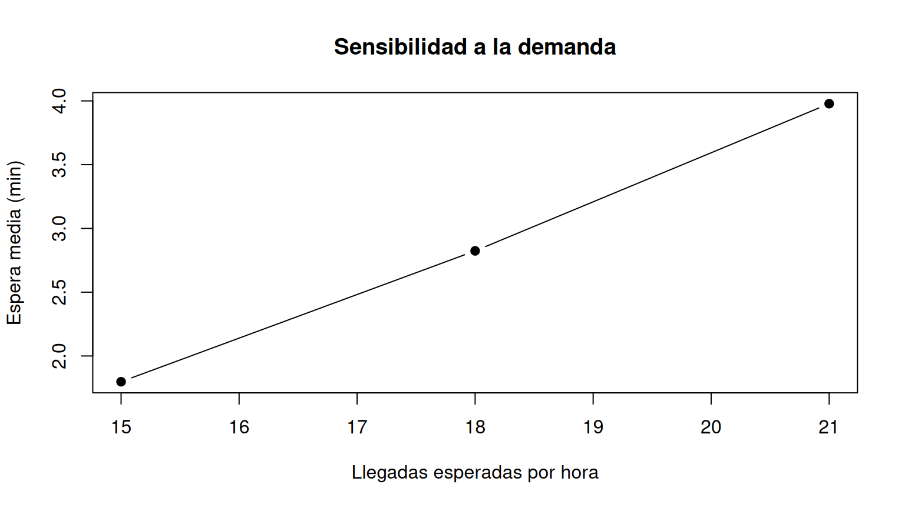

Organización: dos sesiones de 90 minutos. Equipos de máximo tres estudiantes. Ejemplo conductor: cafetería universitaria con una fila y un servidor. Los valores numéricos son supuestos didácticos, no mediciones del campus.
Implementar un motor de simulación en R, verificar su lógica, estimar indicadores mediante réplicas independientes y comparar escenarios sin confundir incertidumbre aleatoria con cambios en los parámetros.
| Tiempo | Actividad | Evidencia |
|---|---|---|
| 0–15 min | Revisar el modelo y sus supuestos | Tabla de parámetros |
| 15–45 min | Implementar llegadas y tiempos de servicio | Funciones en R |
| 45–75 min | Programar FIFO y tiempos de espera | Trayectoria simulada |
| 75–90 min | Ejecutar pruebas de coherencia | Resultados de prueba |
Durante las tres semanas se utilizará un mismo modelo para que los archivos sean independientes y los estudiantes puedan adaptar el código a parqueaderos, salas de estudio, cajas u otros sistemas.
| Variable | Significado | Distribución supuesta | Parámetros |
|---|---|---|---|
| \(T\) | Tiempo entre llegadas (min) | Exponencial | tasa \(\lambda=0.3\) por minuto |
| \(S\) | Atención base (min) | Gamma | forma 4, escala 0.5 |
| \(B\) | ¿Compra adicional? (0/1) | Bernoulli | \(p=0.3\) |
| \(A\) | Tiempo adicional si compra (min) | Uniforme | mínimo 0.5, máximo 1.5 |
El tiempo total de servicio es \(D=S+BA\). El número de llegadas en una ventana de duración \(H\) se deriva de los tiempos entre llegadas; no se genera por separado para la misma trayectoria. Se supone independencia entre las variables primitivas, como simplificación que deberá revisarse con datos reales.
La intensidad de llegadas es \(0.3\times60=18\) clientes por hora. La atención media es \(E(D)=4(0.5)+0.3(1)=2.3\) minutos. La utilización teórica aproximada de un servidor es \(0.3(2.3)=0.69\).
simular_jornada <- function(lambda = 0.3, forma = 4, escala = 0.5,
p_extra = 0.3, a_min = 0.5, a_max = 1.5,
horizonte = 120) {
stopifnot(lambda > 0, forma > 0, escala > 0,
p_extra >= 0, p_extra <= 1, a_min >= 0,
a_max >= a_min, horizonte > 0)
# Se generan llegadas sucesivas hasta el horizonte de observación.
llegadas <- numeric(0)
reloj <- 0
repeat {
reloj <- reloj + rexp(1, rate = lambda)
if (reloj > horizonte) break
llegadas <- c(llegadas, reloj)
}
n <- length(llegadas)
if (n == 0) {
return(data.frame(id=integer(0), llegada=numeric(0),
base=numeric(0), extra=integer(0),
adicional=numeric(0), servicio=numeric(0),
inicio=numeric(0), salida=numeric(0),
espera=numeric(0), sistema=numeric(0)))
}
base <- rgamma(n, shape=forma, scale=escala)
extra <- rbinom(n, size=1, prob=p_extra)
adicional <- runif(n, min=a_min, max=a_max) * extra
servicio <- base + adicional
inicio <- salida <- numeric(n)
for (i in seq_len(n)) {
anterior <- if (i == 1) 0 else salida[i-1]
inicio[i] <- max(llegadas[i], anterior)
salida[i] <- inicio[i] + servicio[i]
}
data.frame(id=seq_len(n), llegada=llegadas, base=base,
extra=extra, adicional=adicional, servicio=servicio,
inicio=inicio, salida=salida,
espera=inicio-llegadas, sistema=salida-llegadas)
}Interpretación: las llegadas se producen dentro de
las primeras 120 min; el servidor puede terminar de atender después de
ese horizonte. La disciplina es FIFO, sin abandonos y
con un servidor. inicio es el máximo entre la llegada del
cliente y la salida del anterior; espera es la diferencia
entre inicio y llegada.
set.seed(2301)
jornada <- simular_jornada()
knitr::kable(head(jornada, 8), digits=2)| id | llegada | base | extra | adicional | servicio | inicio | salida | espera | sistema |
|---|---|---|---|---|---|---|---|---|---|
| 1 | 3.56 | 3.15 | 0 | 0 | 3.15 | 3.56 | 6.71 | 0.00 | 3.15 |
| 2 | 3.77 | 2.07 | 0 | 0 | 2.07 | 6.71 | 8.78 | 2.94 | 5.01 |
| 3 | 12.75 | 0.52 | 0 | 0 | 0.52 | 12.75 | 13.26 | 0.00 | 0.52 |
| 4 | 18.04 | 1.52 | 0 | 0 | 1.52 | 18.04 | 19.56 | 0.00 | 1.52 |
| 5 | 26.25 | 2.30 | 0 | 0 | 2.30 | 26.25 | 28.56 | 0.00 | 2.30 |
| 6 | 28.88 | 1.01 | 0 | 0 | 1.01 | 28.88 | 29.89 | 0.00 | 1.01 |
| 7 | 30.52 | 0.95 | 0 | 0 | 0.95 | 30.52 | 31.47 | 0.00 | 0.95 |
| 8 | 35.75 | 1.69 | 0 | 0 | 1.69 | 35.75 | 37.44 | 0.00 | 1.69 |
cat('Llegadas:', nrow(jornada), '\n')## Llegadas: 33cat('Espera media:', round(mean(jornada$espera), 2), 'min\n')## Espera media: 0.97 mincat('Prob. empírica de espera > 5:',
round(mean(jornada$espera > 5), 3), '\n')## Prob. empírica de espera > 5: 0Explicación: cada fila es un cliente.
mean(espera > 5) calcula una proporción empírica, es
decir, una estimación de probabilidad a partir de la trayectoria. Con
una sola jornada esta estimación puede fluctuar considerablemente.
stopifnot(all(jornada$espera >= -1e-10),
all(jornada$inicio >= jornada$llegada),
all(jornada$salida >= jornada$inicio),
all(diff(jornada$llegada) >= 0))
plot(jornada$id, jornada$espera, type='h', lwd=2,
xlab='Cliente', ylab='Espera (min)',
main='Esperas por orden de llegada')
abline(h=5, lty=2)
Explicación: las condiciones stopifnot
son pruebas mínimas de consistencia; si una falla, la ejecución se
interrumpe. La línea horizontal permite identificar clientes que
superaron cinco minutos de espera.
| Tiempo | Actividad | Evidencia |
|---|---|---|
| 0–20 min | Definir indicadores y unidad de réplica | Tabla de métricas |
| 20–45 min | Ejecutar muchas jornadas | Matriz de resultados |
| 45–75 min | Comparar escenarios y cuantificar precisión | Tabla y gráficos |
| 75–90 min | Interpretar y redactar conclusiones | Informe técnico preliminar |
resumir_jornada <- function(datos) {
n <- nrow(datos)
data.frame(clientes=n,
espera_media=if(n) mean(datos$espera) else NA_real_,
prop_mas_5=if(n) mean(datos$espera > 5) else NA_real_,
servicio_medio=if(n) mean(datos$servicio) else NA_real_)
}
set.seed(2302)
B <- 500
replicas <- do.call(rbind, replicate(B,
resumir_jornada(simular_jornada()), simplify=FALSE))
knitr::kable(data.frame(indicador=c('Clientes por jornada',
'Espera media por jornada',
'Proporción que espera > 5'),
estimacion=c(mean(replicas$clientes),
mean(replicas$espera_media,na.rm=TRUE),
mean(replicas$prop_mas_5,na.rm=TRUE))),digits=3)| indicador | estimacion |
|---|---|
| Clientes por jornada | 35.908 |
| Espera media por jornada | 2.391 |
| Proporción que espera > 5 | 0.165 |
Explicación: cada ejecución de
simular_jornada() es una réplica
independiente del experimento bajo los mismos supuestos. Se
promedian indicadores de jornadas; esto estima el promedio entre
jornadas, que no es necesariamente igual al promedio ponderado entre
todos los clientes. Para probabilidades por cliente puede utilizarse el
cociente entre el total de clientes con espera superior a cinco minutos
y el total de clientes simulados.
x <- replicas$espera_media
x <- x[is.finite(x)]
error_estandar <- sd(x)/sqrt(length(x))
intervalo_aprox <- mean(x) + c(-1,1)*1.96*error_estandar
c(media=mean(x), error_estandar=error_estandar,
IC95_inferior=intervalo_aprox[1], IC95_superior=intervalo_aprox[2])## media error_estandar IC95_inferior IC95_superior
## 2.39112 0.07424 2.24560 2.53664Explicación: el intervalo aproximado describe la incertidumbre de Monte Carlo sobre la media de espera entre jornadas, no la incertidumbre de los parámetros ni un intervalo para el tiempo de espera individual.
set.seed(2303)
comparar <- function(lambda, B=300) {
z <- do.call(rbind, replicate(B,
resumir_jornada(simular_jornada(lambda=lambda)), simplify=FALSE))
data.frame(llegadas_hora=lambda*60,
clientes=mean(z$clientes),
espera_media=mean(z$espera_media,na.rm=TRUE),
prob_mas_5=mean(z$prop_mas_5,na.rm=TRUE))
}
resultado <- rbind(comparar(0.25), comparar(0.30), comparar(0.35))
knitr::kable(resultado,digits=3)| llegadas_hora | clientes | espera_media | prob_mas_5 |
|---|---|---|---|
| 15 | 30.24 | 1.798 | 0.114 |
| 18 | 36.20 | 2.824 | 0.207 |
| 21 | 42.19 | 3.978 | 0.300 |
plot(resultado$llegadas_hora,resultado$espera_media,type='b',pch=19,
xlab='Llegadas esperadas por hora',ylab='Espera media (min)',
main='Sensibilidad a la demanda')
Interpretación: aumentar la demanda sin aumentar la capacidad tiende a elevar las esperas. Son simulaciones de horizonte finito, por lo que aun si una configuración fuese inestable a largo plazo, el código podría ejecutarse; debe advertirse al interpretar resultados.
Adaptar simular_jornada() al sistema del equipo.
Ejecutar al menos 300 réplicas por escenario. Definir al menos dos
escenarios, calcular tres indicadores y documentar diferencias. Incluir
una comprobación lógica automatizada con stopifnot y
explicar una limitación del modelo.
Entregar un archivo .R o .Rmd reproducible
con: función de simulación, semillas aleatorias, verificación, tabla de
indicadores, comparación de escenarios y conclusiones breves.
No reemplazar los resultados simulados por números
prefijados.